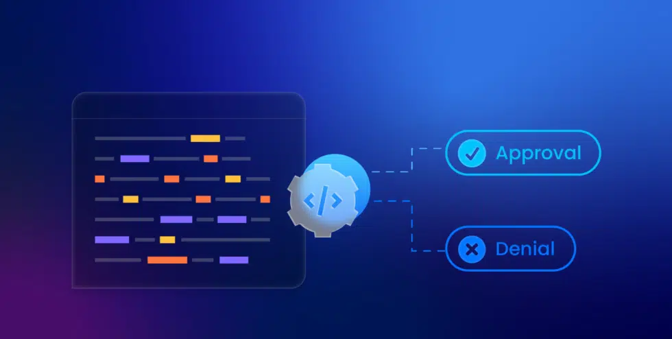
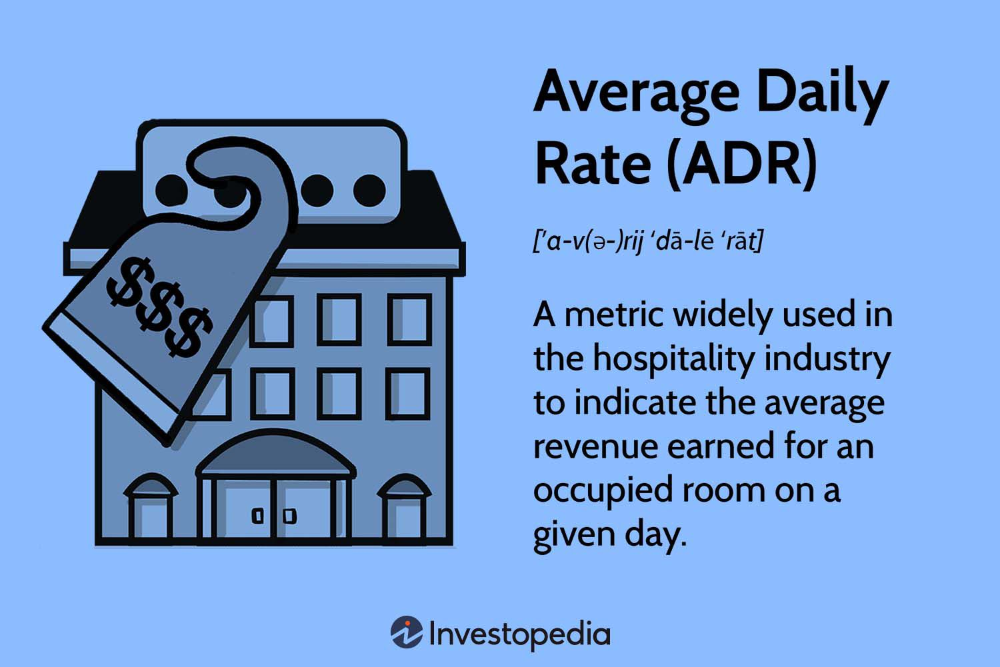

I built a loan approval prediction model using machine learning. I analyzed a large dataset (80,000 applications) and cleaned it to ensure accuracy. I then transformed the data and used various machine learning models to predict loan approvals. The best model achieved a 93% success rate in predicting approvals.


This project utilized Power BI to analyze customer churn within a bank by analyzing key metrics to understand why customers leave. The goal was to identify factors influencing customer departures and develop strategies to improve customer retention.

I sharpened my analytical skills in the hospitality sector, focusing on revenue optimization. I analyzed key performance indicators (KPIs) like occupancy rate and average daily rate to identify trends and opportunities for growth. This data-driven approach helped me understand guest behavior and optimize pricing strategies.
I uncovered valuable sales insights for a hardware company by analyzing key performance indicators (KPIs). This included metrics like unit sales, revenue generated, profit margin and customer segmentation. By dissecting this data, I identified trends in product popularity, buying habits, and target markets. This knowledge empowered the company to make data-driven decisions to optimize sales strategies.

I transformed raw housing data into a clean, analysis-ready format using SQL queries. This involved techniques like identifying and handling missing values, correcting inconsistencies, and standardizing data formats. By ensuring data quality, I prepared the housing dataset for accurate and insightful analysis.
I harnessed SQL to explore a COVID-19 dataset, uncovering trends and insights. My queries investigated factors like case numbers, death rates, and vaccination statistics across locations and timeframes. This data exploration provided a deeper understanding of the pandemic's impact.